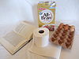

paper

Definition: Paper is a thin sheet material produced by mechanically or chemically processing cellulose fibres derived from wood, rags, grasses or other vegetable sources in water, draining the water through fine mesh leaving the fibre evenly distributed on the surface, followed by pressing and drying. Although paper was originally made in single sheets by hand, almost all is now made on large machines—some making reels 10 metres wide, running at 2,000 metres per minute and up to 600,000 tonnes a year. It is a versatile material with many uses, including printing, painting, graphics, signage, design, packaging, decorating, writing, and cleaning. It may also be used as filter paper, wallpaper, book endpaper, conservation paper, laminated worktops, toilet tissue, or currency and security paper, or in a number of industrial and construction processes.
Source: Wikipedia
Wikipedia Page
Wikidata Page